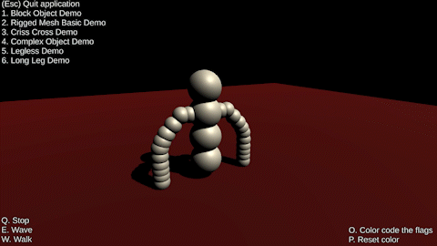
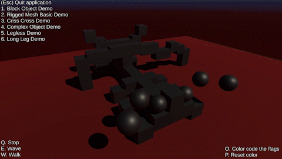

Animations over Procedural Skeletons
 Unity
2021
This research project utilized Unity to create a system that would allow animations to be played on a skeleton that is unknown during production. This was accomplished by creating a system for identifying certain parts of the skeleton that would be needed to perform certain actions. A list of animations were then created with the parts required flagged. An animation system would then search down a binary tree for the best animation that fits the parts on the current system and assign movements and rotations to individual "bones" based on the selected animation.
For this project, a custom skeleton system was created leveraging Unity's object hierarchy system. Individual objects were treated as bones allowing a higher level animation system to assign movements and rotations to an animation script attached to the object.
This is a project I would love to revisit and improve upon sometime in the future. Our method of animating the individual bones could be drastically improved, and creating a method for de-serializing animations from an outside source would be the icing on the cake.